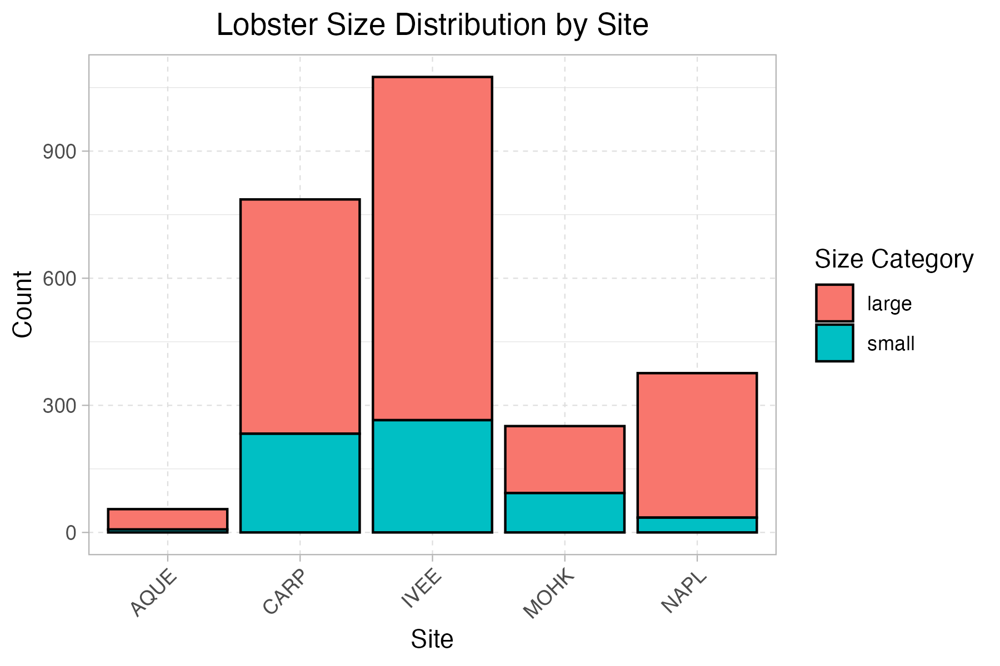
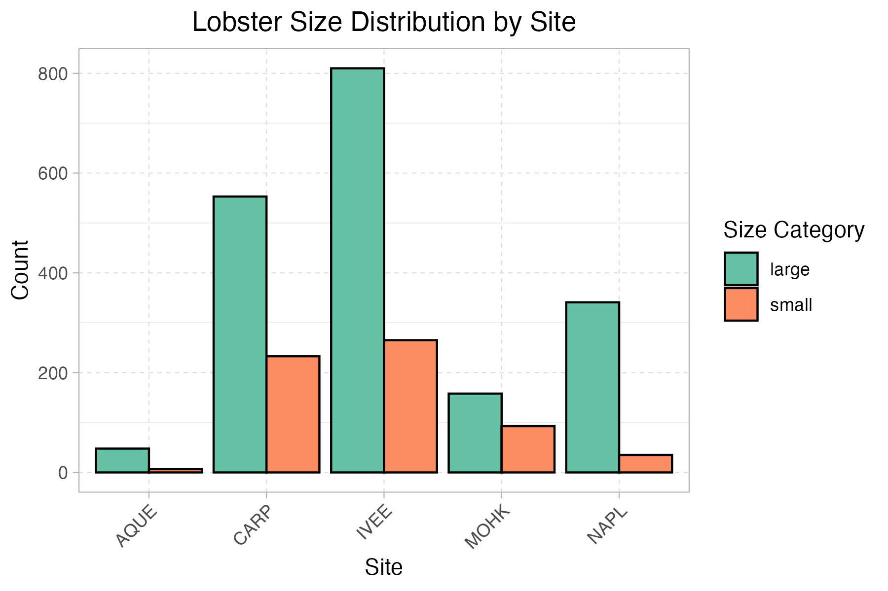
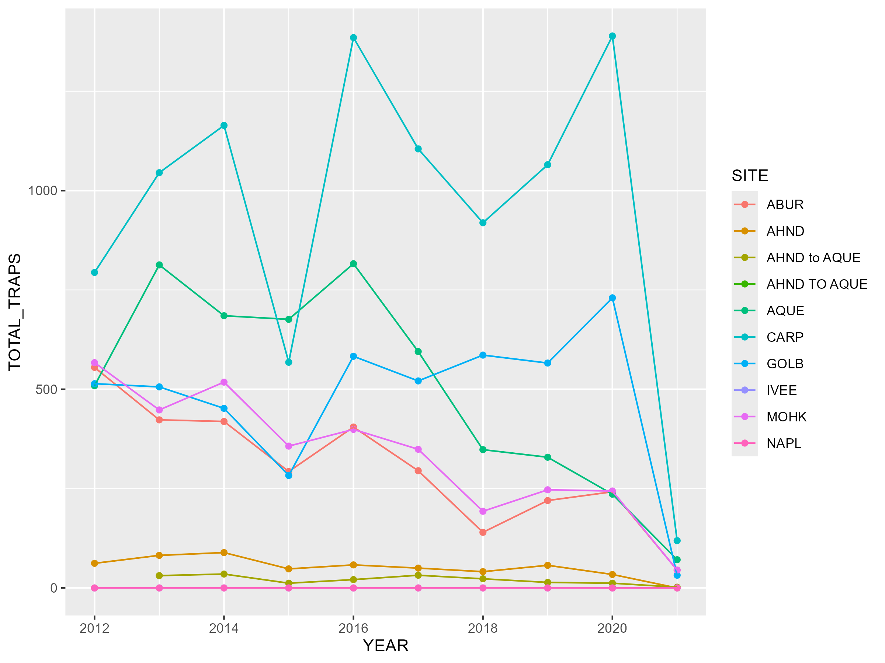
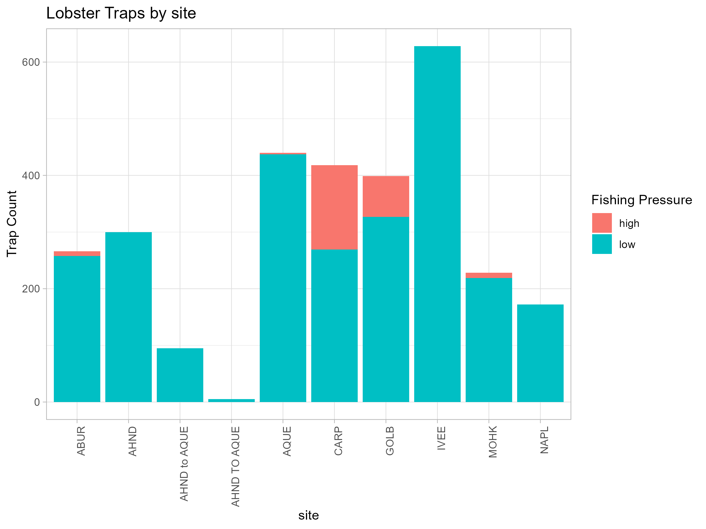

lobster-report
Data Citation
Santa Barbara Coastal LTER, D. Reed, and R. Miller. 2022. SBC LTER: Reef: Abundance, size and fishing effort for California Spiny Lobster (Panulirus interruptus), ongoing since 2012, version 8. Environmental Data Initiative. https://doi.org/10.6073/pasta/25aa371650a671bafad64dd25a39ee18. Accessed April 27, 2026.
EDI Portal link: https://portal.edirepository.org/nis/mapbrowse?packageid=knb-lter-sbc.77.8
Abstract Summary
This dataset tracks abundance, size, and fishing pressure of California spiny lobsters in the Santa Barbara Channel to study how fishing and marine protected areas affect kelp forest ecosystems. It includes annual diver surveys across multiple sites (inside and outside MPAs) and seasonal measurements of fishing activity based on trap counts.
Owner Analysis and Visualizations
Lobster Size Distribution Analysis
This analysis explores how lobster size and abundance vary across sites, which may reflect differences in environmental conditions or fishing pressure.
Dodged bar plot showing lobster counts by site, grouped by size category

The plot shows variation in lobster size distribution across sites. Some sites have a higher proportion of larger lobsters, which could indicate lower fishing pressure or protection effects, while others are dominated by smaller individuals.
Line plot showing lobster counts over time for multiple sites

Lobster abundance changes over time differ by site, suggesting that local factors such as habitat or fishing intensity may influence population trends.
Collaborator Analysis and Visualizations
Temporal Trends and Fishing Pressure of Lobster Traps
This analysis examines how lobster trap counts vary over time and across sites, as well as differences in fishing pressure. These patterns may reflect spatial variability in fishing effort and potential impacts of management or site accessibility.
Line plot showing total lobster trap counts over time across multiple sites

This figure shows temporal trends in total lobster trap counts across sites. Overall, trap counts vary considerably between sites and across years, indicating changes in fishing effort over time. Some sites exhibit increasing trends or peaks in specific years, while others remain relatively stable, suggesting spatial differences in fishing intensity and possibly site-specific management or accessibility.
Bar plot showing lobster trap counts by site, grouped by fishing pressure

This plot highlights differences in fishing pressure across sites between 2019–2021. Most sites are dominated by low fishing pressure, but a few (e.g., CARP and GOLB) show a higher proportion of high fishing pressure, indicating more intensive fishing activity in those areas. The uneven distribution suggests that fishing effort is not uniform and may be concentrated in specific locations.
Discussion
Together, these plots suggest that lobster populations and fishing activity vary substantially across sites and over time. Differences in size structure, abundance, and trap counts may reflect local habitat conditions, fishing intensity, and possible effects of marine protection. Overall, the dataset shows that lobster dynamics in the Santa Barbara Channel are spatially uneven and influenced by both ecological and human factors.